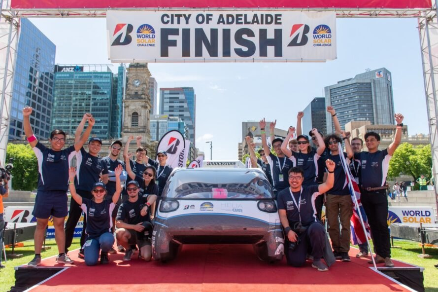
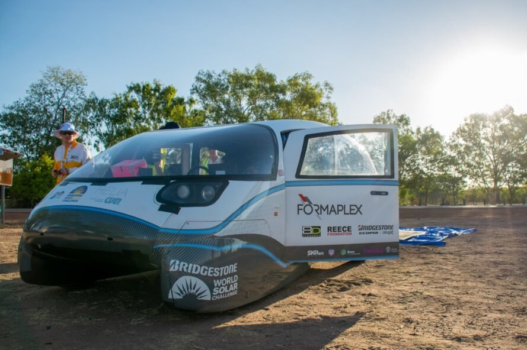
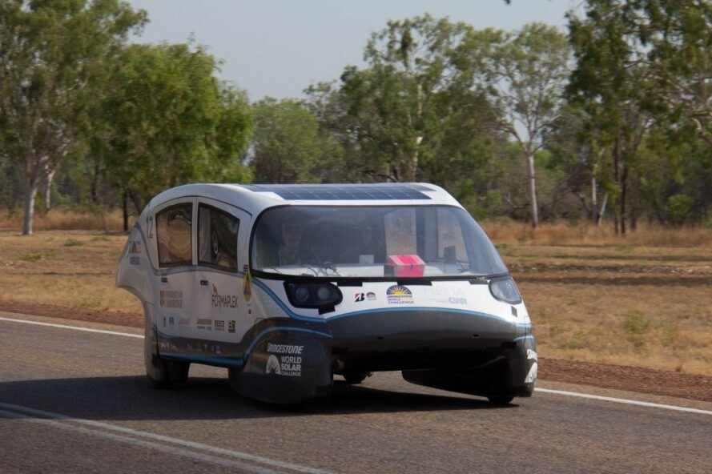
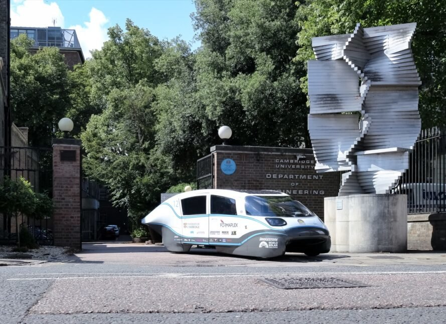
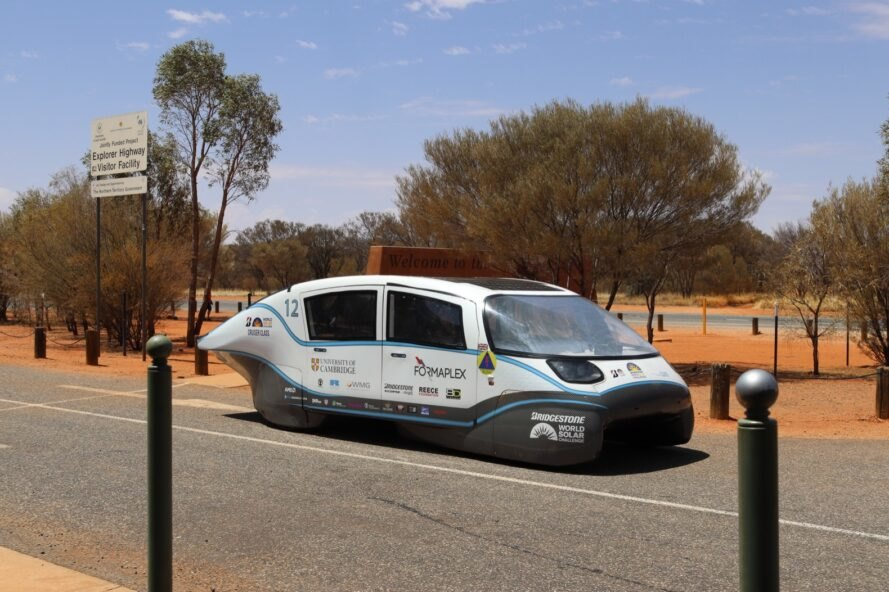
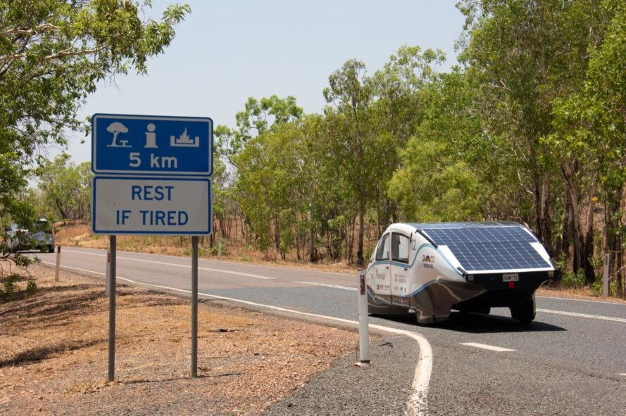
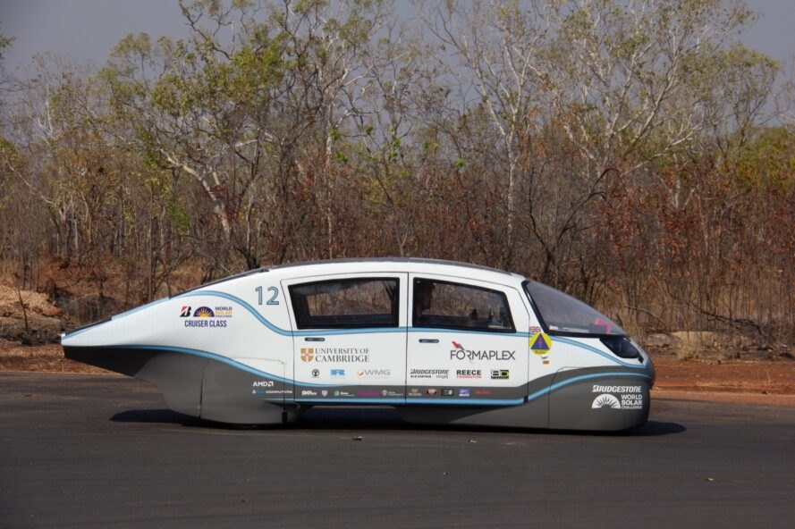

Undergraduate students at Cambridge University have teamed up with Formula 1 engineering experts and Bridgestone to design and build Helia — a solar-powered electric car that is so energy efficient, it can travel more than 500 miles at 50 miles per hour on the same amount of power it takes to boil a kettle.

The student team, known as Cambridge University Eco Racing (CUER), equipped the aerodynamic and lightweight vehicle with an extremely high-energy density battery pack to achieve more than double the range of a Tesla Model 3, while being just a quarter of the size. To show off its features, Helia recently competed in the Bridgestone World Solar Challenge 2019, a renowned solar car race where 40 to 50 teams race 1,864 miles from Darwin to Adelaide.


In designing Helia, CUER pushed the boundaries of automotive battery technology and aerodynamics. Portsmouth-based Formaplex, a manufacturer of lightweight components for high-powered supercars and Formula 1 teams, created Helia’s ultra-lightweight, carbon-fiber chassis and body panels, making it possible for the four-seat family car to weigh just 1,200 pounds without compromising structural integrity. The aerodynamic build is coupled with low rolling-resistant tires — developed in collaboration with Bridgestone — to significantly enhance the electric car’s overall energy efficiency.


The solar-powered Helia is equipped with high-performance lithium-ion battery packs produced in collaboration with Silverstone-based vehicle electrification company Danecca. Although electrical issues prevented the team from progressing past the first stage of the Bridgestone World Solar Challenge 2019, they are optimistic about taking Helia to other solar races in Europe and beyond.


“Helia was designed to demonstrate the technology behind electric vehicles and renewable energy and will visit schools next summer with the aim of inspiring the next generation of engineers,” said Xiaofan Zhang, CUER’s program director. “We have plenty of positives to take forward and are already in search of our next challenge.”
Images via CUER
SOURCE: INHABITAT